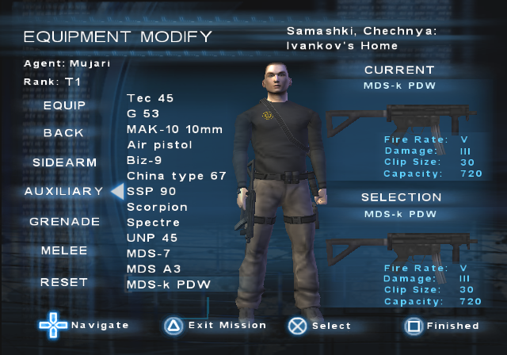

A simple trick that will help with avoiding fire while carrying a body.
How to?
When carrying a body, pause the game and open the Equipment menu. From there, use L2/R2 to select the Smoke greandes and press X to equip them. Unpause the game and simply use SQUARE to drop them.
Dormagen trick for ZERO deaths on any mission
Info
This is useful trick for getting ZERO deaths on any mission.
How to?
Equip Dormagen grenades and when low on flak jacket or health, drop one close to your agent. Agent gets knocked out and respawns with full flak jacket and health.
Sarin grenade tricks
Info
Useful tricks when using Sarin grenades. The sarin gas expands and works through floors and walls.
How to?
Drop the sarin close to a wall where the enemy is. For example, in Warehouse District, drop the sarin into the corner of the furnace room. The gas spreads through ceilling/wall where the ALA usually spawns. Before the gas dissapears, climb the ladder to spawn them and they will instantly die.
Remove flak jackets from enemies on Bonus missions
Info
This one is useful for Montenegro mission.
How to?
Simply reset the mission. The easiest thing to do is to die and wait for the mission to reset. Once it is done, enemies won't have flak jackets. This works for any Bonus mission.
Quarantine Zone: Secret PDA
Info
A secret PDA that only triggers online but can be triggered offline.
How to?
Using Jump Glitch, get onto the truck from which you jump to the C4 and get the C4. Use C4 to blow up the gates which lead to Proust. Find the electrical switch and turn it off since the subway path will be used. Now, backtrack through the subway. When the point where the train crashes is reached, the PDA should activate.
Backtracking more and getting to the area where CHA officer is (with the hospital truck), the objective for saving CHA officers fails. Only way to bypass this is to jump glitch onto the tent and get to that area from the tent.
Carthage Mall: Saving SWAT officers
Info
The Team objective of saving SWAT officers can be done solo in offline.
How to?
Step 1: Equip smoke greandes and a stun jack.
Step 2: From the starting point, go right to the first doors.
Step 3: Drop the smoke grenade to keep enemies from firing at you.
Step 4: Lockdown the doors and move up the closest escalator then turn right and cross the bridge.
Step 5: Pickup the officer on the floor and bring him to Safe Zone. Use the other escalator for fastest route.
Step 6: Get to the second officer which is near-by the Safe Zone.
Step 7: Repeat Step 3 for the officer and bring him to the Safe Zone.
Step 8: Climb up the closest escalator and go to the position where the first officer was then proceed a bit foward for the doors.
Step 9: Repeat Step 3 and lockdown the doors then get to the other side, crossing the bridge.
Step 10: Repeat Step 3 and lockdown the doors and then shoot the closest glass.
Step 11: Climb down where you broke the glass and get to the final doors which are opposite of the escalator.
Step 12: Repeat Step 3 and equip the stun jack. Soon as the SWAT officer enters, stun him and lockdown the doors.
And that's it. The objective is completed.
Krivorozhstal Mill: Syncing the workers with Taser
Info
A useful, simple trick when escorting 2 workers at the same time.
How to?
Equip the taser, E.D.T or E.P.D.D. Aim at the worker and spam the SQUARE without holding.
Belaya Vezha: Scud missile tricks
Info
Tricks that can be done with scud missile in Belaya Vezha.
Softlocking it by shooting
Shooting the scud missile will make it indestructable which makes the objective to softlock.
ONE C4 remaining
After planting C4 onto it, you'll still have one more remaining like it was never used.
Blowing up with grenades
Scud can be blown using grenades. Instead of waisting time on getting to the chooper to equip grenades, there is a box with Delayed frags near the Communications truck.
Minsk: Carry back weapon without failing stealth
Info
List of back weapons which can be carried on Minsk without failing stealth.
SG-8, OICW, base (C8 Rifle), Stava SG-76 HBAR, Shovel
Extra note
All Glock sidearms are seen by the enemies.
All auxiliary, grenades and melee won't be seen.
Tokyo: Elevator trick
Info
Using the elevator without hacking it or getting the Ryuusaki's unit.
How to?
After reaching the stairs the lead to Ryuusaki, continue going up until reaching a point where Team interaction is. If offline, use Jump Glitch to get up there. You are now on floor 2 and elevators from here work. They only stop working if a certain trigger point, which is in the Lobby and right in front of the elevators, will disable them.
Glitches
Magic Box glitch
Info
Get any weapon you desire without cheat codes.
How to?
In summary, go to Warehouse District for easiest method.
Step 1: Equip FA-MAS and clear the area to the right where train cart is with the C4. Make sure not to use the FA-MAS as you'll need it with full magazine.
Step 2: Locate the box which contains another FA-MAS. It is on top of the small staircase.
Step 3: Fire 5 rounds of equipped FA-MAS and then place it in the box. Step away for a bit and open the box and take whatever is in there.
Step 4: Drop the equipped weapon to the ground and pick up another one from the box. Repeat this until you can have 200 rounds in that NULL weapon.
Step 5: Once you have a NULL back weapon with 200 magazine, drop it to the floor somewhere safe and place other "0/0" ones into the box.
Step 6: Pickup the dropped 200 magazine back weapon and start shooting until you reach the desired weapon to replace.
Step 7: Once reached, drop the weapon into the box, step away and the re-open the box and take the desired weapon.
The oldest glitch in the book and the most sexiest one. The original name of this glitch was "5 out of 10 glitch" because it would happen 5 times out of 10. Thank God the developers didn't patch this as this is the best glitch in the game that everyone likes to use.
How to?
Use CIRCLE to roll and once the agent is in animation of getting up from the back, spam X.
For more info, check the video made by TOS Elder himself, the MattyBoy:
This glitch can be used for bunch of Team objectives like: Laptop on Quarantine Zone, Scud missile on Taherir Palace, Flight box recorder on Myanmar and stopping the missile on Ukraine which is one of the hardest.
Here is a proof for stopping the missile on Ukraine using Jump Glitch by Pandutney. NOTE: This only works on original hardware and not the emulator!
It can be also used for Blowing the bridge on Belaya Vezha but it is barely possible. Here is a proof guide by Pandutney on how to do it:
Flamethrower glitch for grenade ratings and invincible Zohar
Info
A glitch that makes NPCs invincible. Useful for getting the grenade ratings or for Zohar on Taherir Palace so that he cannot be killed.
Grenade ratings glitch
Sarin is needed and if doing without cheat codes, it can be done on Ukraine only.
Step 1: Take out the first officer from the very start and get his sarin grenades. There is one more sarin in the box in the closes tent.
Step 2: Get to Gabe by either taking out the rest of the officers or letting Leonov escape. Eitherway, make sure to have at least 2 sarin grenades.
Step 3: When close to silo, there should be flamethrower guys spawning. Take them out and collect their weapon before their body boxes disappear.
Step 4: When in silo, the Gabe will hack the missile. While he is doing that, try to find some enemy which you can auto-lock onto.
Step 5: Now the actual flamethrower glitch. To make it, you need to find a certain point where auto-lock turns from green to red while moving away/closer the enemy.
Step 6: Once the point has been found, single burst with the flamethrower (press SQUARE, you may hold it for couple if miliseconds) while moving away from the enemy and in the point found from Step 5.
Step 7: If enemy dies, repeat Step 5 and 6. If enemy catched fire but is not dying, all you have to do now is drop Sarin grenade onto him. You will hear constant death sounds but the enemy won't be killed.
After 2 Sarin grenades, the ammount of grenade kills should be 500 or more.
Invincible Zohar glitch
For this one, the "Open Weapons" cheat code is needed to equip the flamethrower.
This glitch sometimes works and sometimes doesn't. It can work for online but is hard to get it working due to latency.
With flamethrower equipped, get to Zohar and kill enemies so he can move. Once he is about to run across the wall which is above his spawn point, manually aim with the flamethrower to his path. Your aim should be alligned with the palm. While Zohar is crossing, hold the FIRE button so he can catch fire.
Bonus missions glitch with own agent
Info
Play as your own agent and equip weapons on Bonus missions without cheat codes.
How to?
When in Command Center, select the mission which is the closest to Bonus mission and have the dialogue "Play Mission" opened and selected. Right after miliseconds of selecting "Play Mission", switch to the Bonus mission. If done correctly, you should have your own agent on Bonus mission and can equip weapons.

Doing this reversed, from Bonus mission to normal one will default looking Cobra (PC_MALE.SKL) which is also the Cobra in the Demo.
Explanation?
Before loading the mission, the game first loads "UseLevelCharacter" and "UseLevelWeapons" adresses which tell whatever to use the specific level character and specific weapons. Then right after it starts the mission.
Lorelei: 10,000 Flak Jacket
Info
Get to have 10 THOUSAND flak jacket on Lorelei.
How to?
By using the Jump Glitch technique, jump across the ledge left of the alarm box, where the water tower is. Then simply climb up the stairs and get to the Mujari in the security tower. Take him out and take the 10k flak jacket from him.
Speedrun tricks and glitches
Krivorozhstal Mill: Stealth mechanics tricks
Info
Doing this trick will skip extra enemies that spawn so it saves time.
How to?
Thanks to LeyoSFO and Pandutney for the info and testing.
Take out the guy on the catwalk in one shot without being seen by him. Make sure not to allow any gunshots near-by from other agents when online.
If done wrong, he will shout something and a translation dialogue box appears below.
The same stealth mechanics apply to the 3 guys near the train at the beginning. If you kill them with triggering the dialogue, no more extra enemies would spawn.
Belaya Vezha: Shortcut for the sewer samples
Info
A shortcut for the samples that saves bunch of time.
How to?
At the cave enterance from where you enter by normal route (climbing the edge), there is a rock in the corner. Position yourself and run towards it, don't roll.
Taherir Palace: Fast guard elimination
Info
The fastest way to eliminate first 5 guards.
How to?
First, equip the Stun Jack. Make sure to change to hands soon after using a melee weapon so that the guards don't shoot.
Step 1: At the start, go left and up the stairs. Take out the first guy who is crossing.
Step 2: Then quickly take out the other guy who is patroling on the opposite side.
Step 3: Quickly get into the cage and take out the guard inside.
Step 4: Interact with the door control system to unlock the doors and quickly get out and take out the last guard.